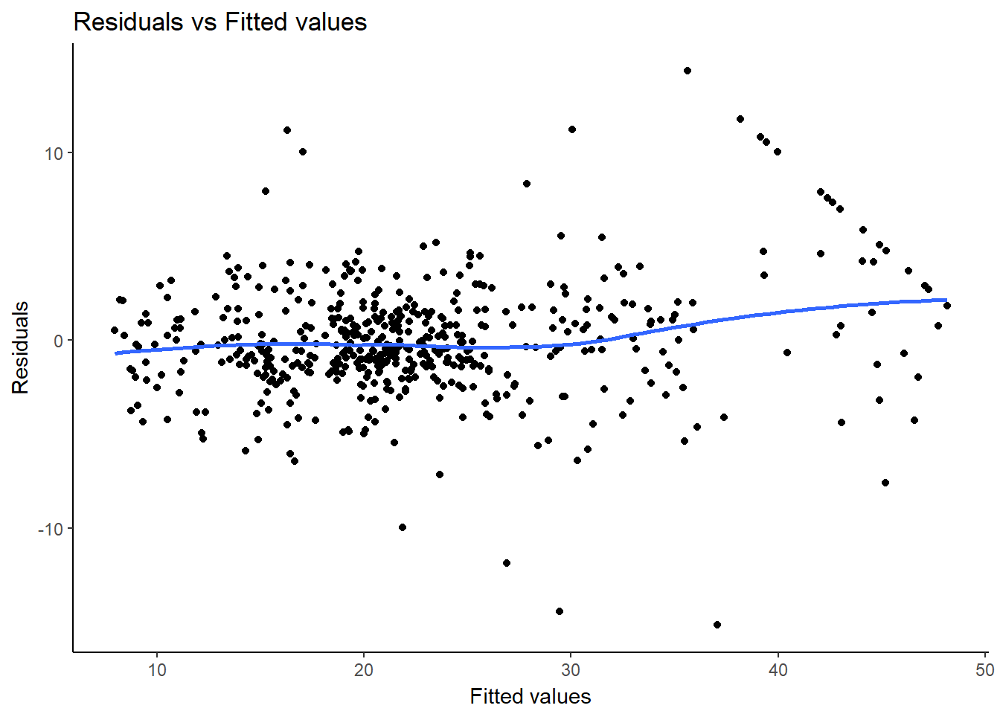
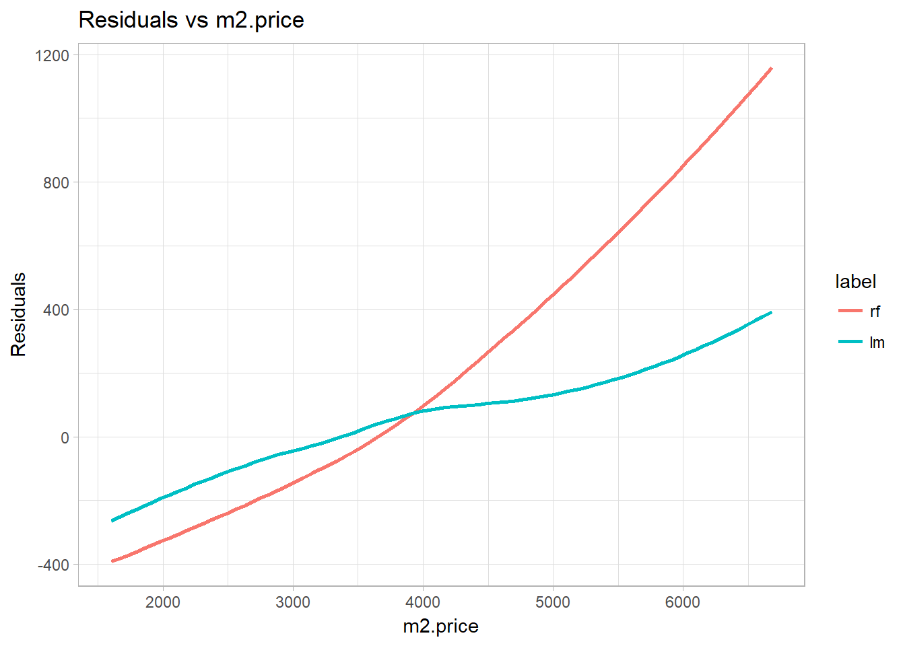
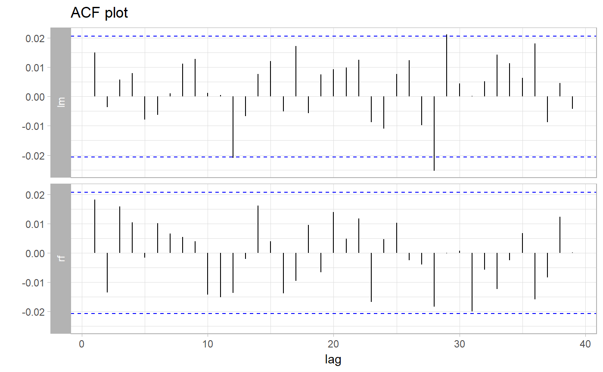
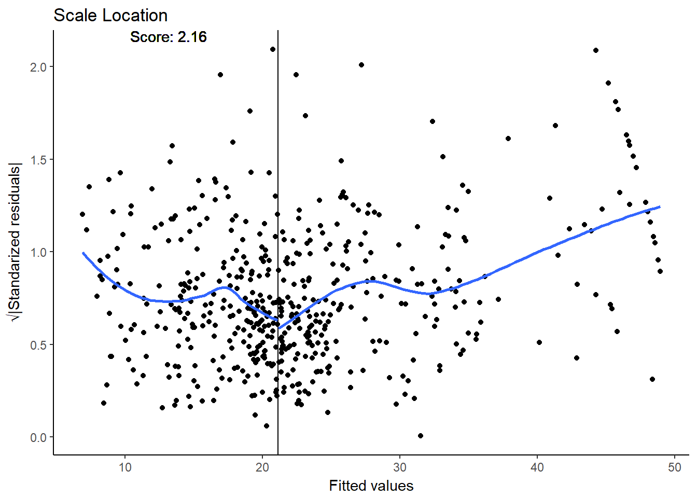
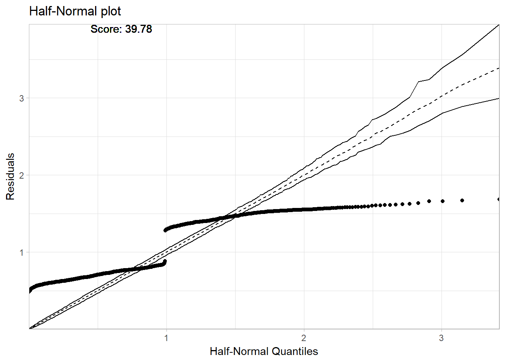

Introduction into model audit
Alicja Gosiewska
2018-03-11
This vignette demonstrates how to use the auditor package. auditor provides methods for model verification and validation by error analysis.
Many models, such as random forests and neutral networks are nowadays treated as black boxes. Therefore, there is a lack of theory that describes the behavior of errors in those models.
Most methods provided in auditor pacage are model-agnostic, so can be used regardless of knowledge about errors.
Some of the graphical error analysis methods also have corresponding SCORES, which allow comparison of two models.
set.seed(123)Boston data
I our example we will use the Boston dataset from package MASS. It contains information about housing in the area of Boston.
data(Boston, package = "MASS")
Boston$chas <- as.logical(Boston$chas)
head(Boston)## crim zn indus chas nox rm age dis rad tax ptratio black
## 1 0.00632 18 2.31 FALSE 0.538 6.575 65.2 4.0900 1 296 15.3 396.90
## 2 0.02731 0 7.07 FALSE 0.469 6.421 78.9 4.9671 2 242 17.8 396.90
## 3 0.02729 0 7.07 FALSE 0.469 7.185 61.1 4.9671 2 242 17.8 392.83
## 4 0.03237 0 2.18 FALSE 0.458 6.998 45.8 6.0622 3 222 18.7 394.63
## 5 0.06905 0 2.18 FALSE 0.458 7.147 54.2 6.0622 3 222 18.7 396.90
## 6 0.02985 0 2.18 FALSE 0.458 6.430 58.7 6.0622 3 222 18.7 394.12
## lstat medv
## 1 4.98 24.0
## 2 9.14 21.6
## 3 4.03 34.7
## 4 2.94 33.4
## 5 5.33 36.2
## 6 5.21 28.7Random forest model
We need to fit model. For example a Random Forest model.
library("randomForest")
Boston_rf_model <- randomForest(medv ~ ., data = Boston, ntree=50)Preparation for error analysis
The beginning of each analysis is creation of a modelAudit object. It’s an object that can be used to audit a model.
library("auditor")
Boston_rf_audit <- audit(Boston_rf_model)Error analysis
In this section we give short overview of a visual validation of model errors and show the propositions for the validation scores.
Plotting residuals
Function plot() used on modelAudit object returns a Residuals vs fitted values plot.
plot(Boston_rf_audit)
Residuals may be ordered by values any model variable.
plot(Boston_rf_audit, variable = "medv")
In the following sections we will show how to use the plot() function to generate another diagnostic plots.
Autocorrelation
On the Autocorrelation plot there are i-th vs i+1-th residuals. This plot may be useful for checking autocorrelation of residuals.
plot(Boston_rf_audit, type="Autocorrelation", variable="crim")
Sometimes it is difficult to compare two models basing only on visualizations. Therefore, we have proposed some scores, which may be useful for choosing a betetr model. DW score and Runs score are based on Durbin-Watson and Runs test statistics. Details and interpretation of scores are described in scoreDW() and scoreRuns() functions.
Scores can be calculated with the scoreDW() and scoreRuns() functions and the score() function with argument score equals to “DW” or “Runs”.
score(Boston_rf_audit, score="DW", variable = "crim")$score## [1] 2.004283score(Boston_rf_audit, score="Runs", variable = "crim")$score## [1] 2.289233Autocorrelation Function plot
Autocorrelation Function plot can be used to check randomness of errors. If random, autocorrelations should be near zero for lag separations. If non-random, then autocorrelations will be significantly non-zero.
plot(Boston_rf_audit, type="ACF")
Scale Location
This plot shows if residuals are spread equally along the ranges of predictors.
plot(Boston_rf_audit, type="ScaleLocation")
For comparing 2 models we can use GQ score, which is based on Goldfeld-Quandt test statistic. This score is computed and described in scoreGQ() function. And may be computed also in score() function with argument score equals “GQ”.
Cook’s distances
Cook’s distance is used to estimate of the influence of an single observation. It is a tool for identifying observations that may negatively affect the model.
Data points indicated by Cook’s distances are worth checking for validity. Cook’s distances may be also used for indicating regions of the design space where it would be good to obtain more observations.
Cook’s Distances are calculated by removing the i-th observation from the data and recalculating the model. It shows how much all the values in the model change when the i-th observation is removed.
In the case of models of classes other than lm and glm the distances are computed directly from the definition, so this may take a while. In this example we will compute them for a linear model.
We will use the Prestige dataset from package car.
data(Prestige, package = "car")
head(Prestige)Prestige_lm_model <- lm(prestige~education + women + income, data = Prestige)
Prestige_lm_audit <- audit(Prestige_lm_model)
plot(Prestige_lm_audit, type="Cook")
More methods
Package auditor provides also methods for generating HalfNormal plots with simulated envelopes and computing HalfNormal scores. Further details and use case for this tools are in The half-normal plots.